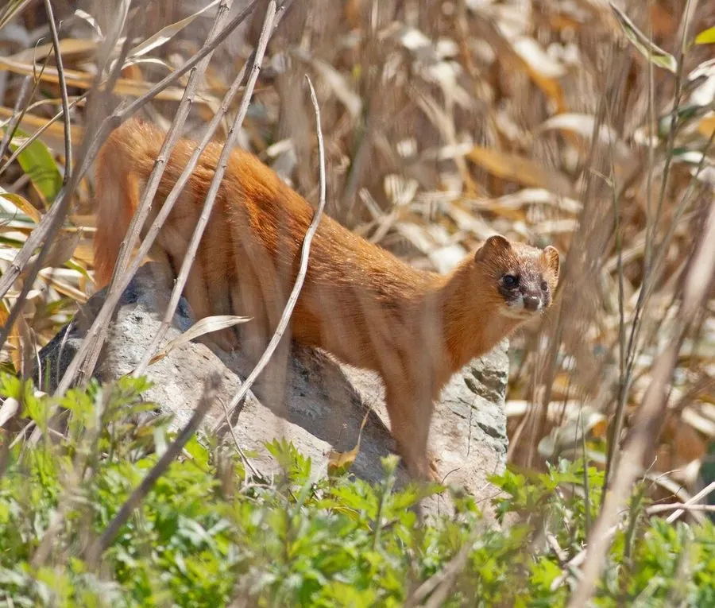

哺乳动物 · 动物界
黄鼬 Mustela sibirica

中国常见的鼬科动物，身体细长、背部呈黄褐色，捕鼠本领十分高强，遇敌时能喷出浓烈的臭气自卫。
- 分类
- 门脊索动物门纲哺乳纲目食肉目科鼬科属鼬属
- 栖息环境
- 平原、丘陵、农田、灌丛与村落附近，也见于城市边缘
- 地理分布
- 东亚，从俄罗斯远东、中国到日本和朝鲜半岛
- 保护级别
- IUCN 无危（LC）；中国“三有”保护动物
物种志
黄鼬体长 0.25–0.39 米，尾长 0.13–0.21 米，体重 0.36–0.82 kg，雄性略大。它的身体细长柔软，背部为黄褐色至橙黄色，腹部浅黄，面部有黑色斑块，尾毛较长且蓬松；四肢短小，爪子锋利，能钻入狭小的洞穴。
黄鼬分布于东亚，从俄罗斯远东、中国到日本、朝鲜半岛，栖息于平原、丘陵、农田、灌丛和村落附近，也常见于城市边缘。它以鼠类为主食，也捕食野兔、鸟类、蛙、鱼和昆虫，动作敏捷，善于钻洞、攀爬和游泳，是农田中重要的鼠害控制者。黄鼬多在夜间活动，遇敌时会竖起尾巴、从肛门腺喷射出带有恶臭的液体自卫。雌兽妊娠期约 30–40 天，每胎 3–6 仔。因毛皮贸易曾被大量捕猎，目前为中国“三有”保护动物，种群总体稳定。
形态与习性
- 食性鼠类为主，也吃野兔、鸟类、蛙、鱼和昆虫
- 体长0.25–0.39 m，尾长 0.13–0.21 m
- 体重0.36–0.82 kg，雄性略大
- 寿命野外约 3–6 年
- 繁殖妊娠期约 30–40 天，每胎 3–6 仔
- 防御肛门腺可喷射恶臭液体自卫
- 活动节律多在夜间活动
趣味知识
- 黄鼬遇敌时会从肛门腺喷出浓烈臭液，让捕食者退避。
- 它身体细长，能钻进比自身更小的洞穴追捕鼠类。
- 一只黄鼬一年可捕食数百只鼠类，是农田的好帮手。
- 黄鼬善于攀爬和游泳，也常见于村落和城市边缘。